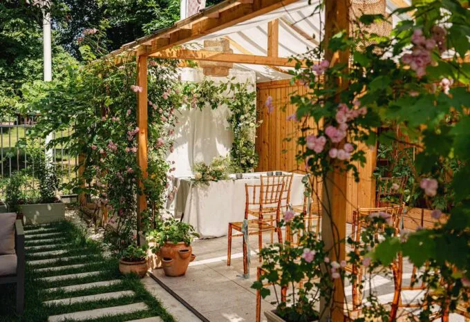
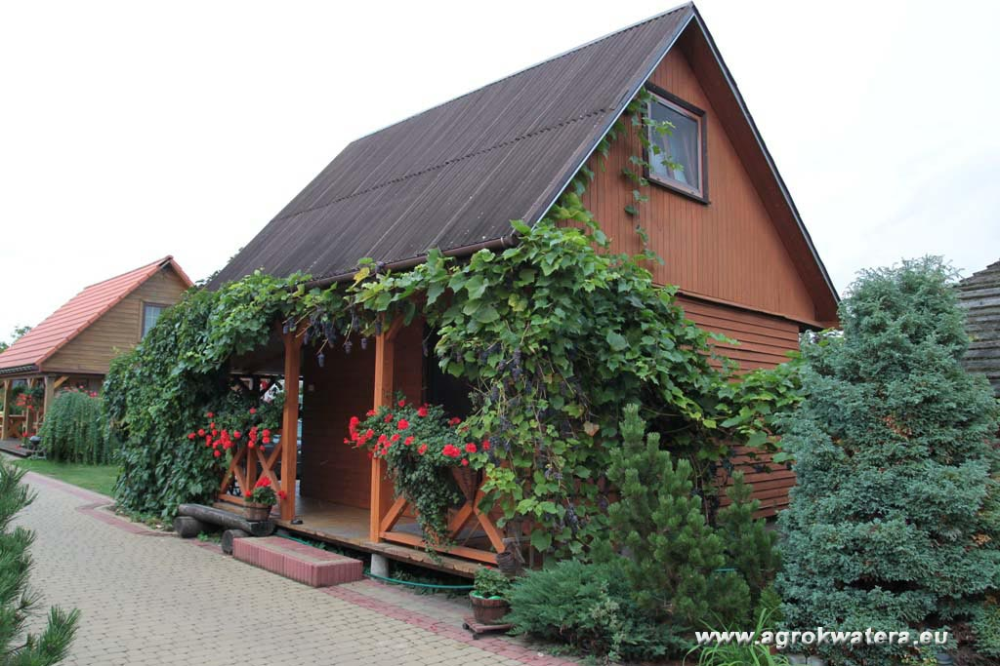
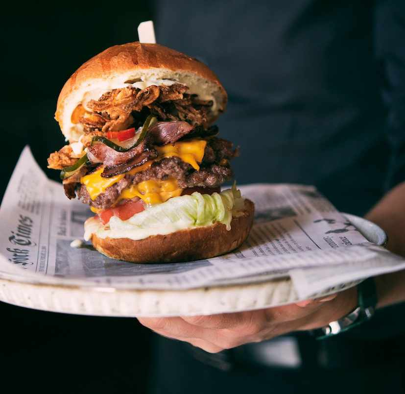
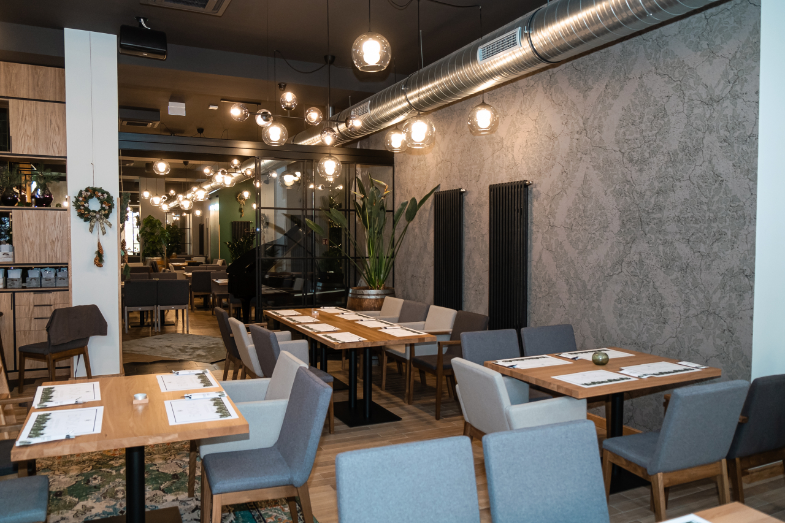
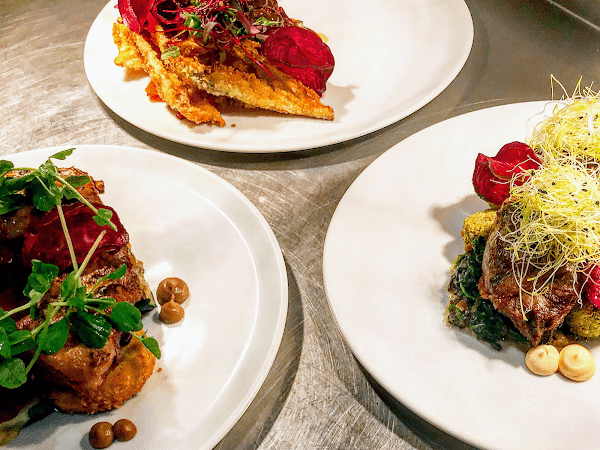
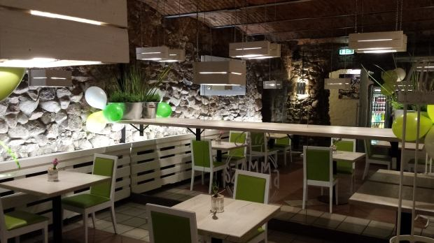
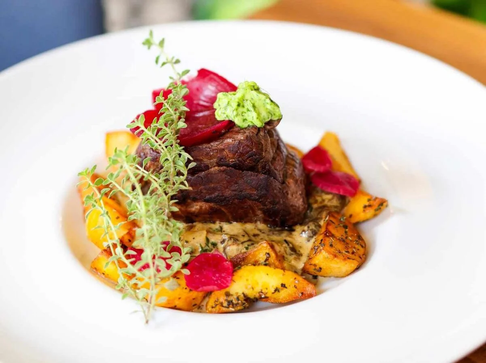
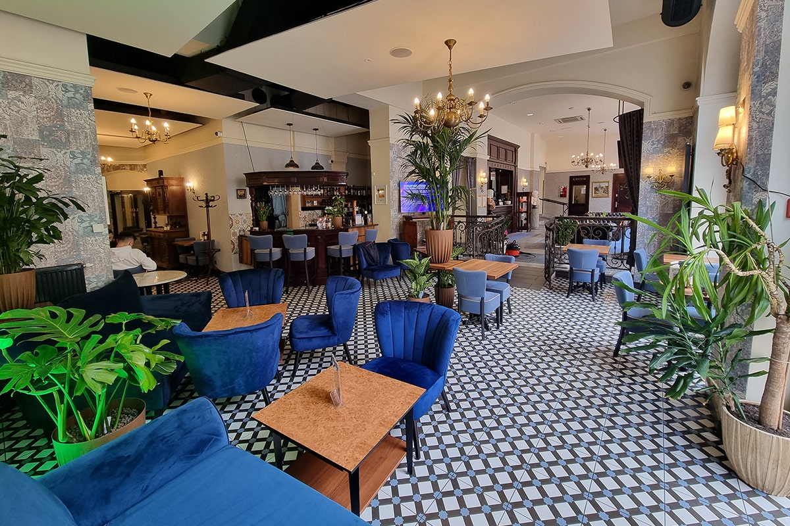
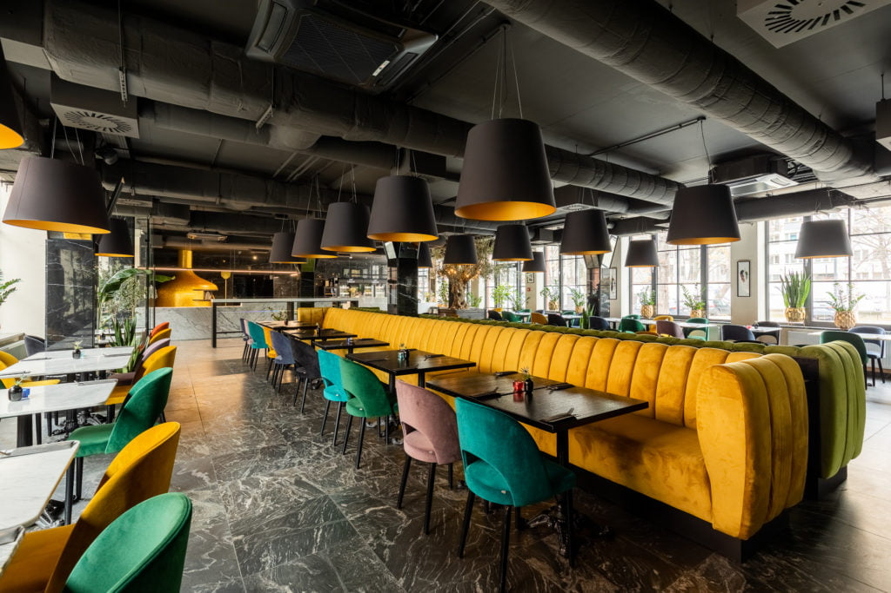
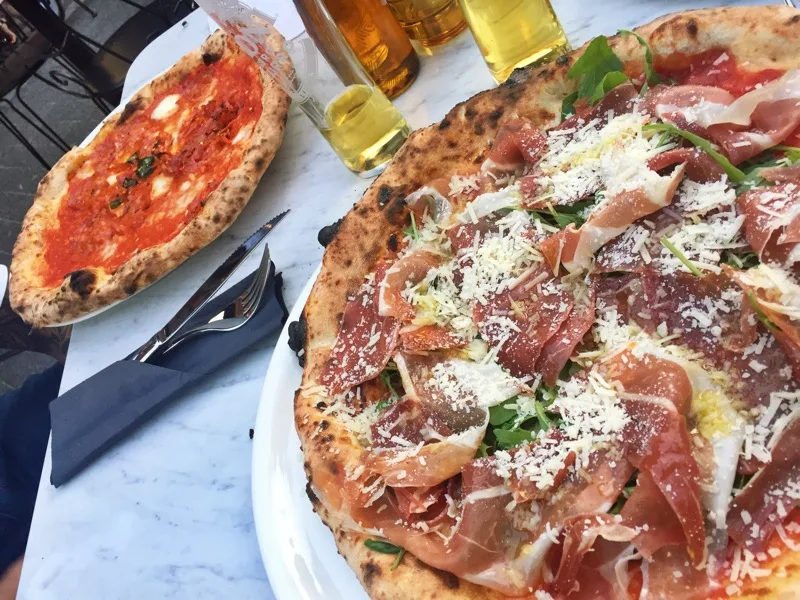

Alternatywy kebaba
Subiektyne TOP 5 restauracji w Gliwicach, innych niż kebab(inaczej nic by tu nie bylo)
- Restauracja Pod Wiązem


Personel bardzo troskliwy, który opiekuje się tobą od momentu wejścia do wyjścia.
Pyszne jedzenie i dobre napoje. Restauracja i ogródek są pięknie urządzone, co sprawia, że chce się w nich spędzić czas.
Jedzenie jest smaczne i estetycznie podane.
Adres: Dolnej Wsi 40
- Restauracja Boska


Obsługa jest przyjazna i kompetentna. Wnętrze restauracji jest gustowne i przytulne, a stoliki i miejsca siedzące są wystarczające.
Istnieje również oddzielna sala, która jest otwierana przy większej liczbie gości lub na imprezy okolicznościowe, do 30 osób.
Czasami w niedziele od 14 do 17 można posłuchać muzyki na żywo. Menu jest bardzo zróżnicowane, więc każdy znajdzie coś dla siebie.
Wydawanie dań jest bardzo sprawne. Restauracja naprawdę zachęca do odwiedzin.
Adres: Rynek 18 c
- SzAMMa Dom Polskiego Wina


Jest to miejsce obowiązkowe na mapie Gliwic.
Jakość jedzenia jest wyższa niż w innych restauracjach.
Wszystkie dania są unikatowe, a szczególnie lody świerkowe z „żelkami”.
Obsługa jest przyjazna, a wybór win szeroki. Zdecydowanie polecane każdemu.
Adres: Raciborska 1/NU1 Wejście od ulicy, Krupnicza
- Restauracja Poziom


W restauracji wita nas miła pani kelnerka, która jest bardzo pomocna i uśmiechnięta.
Restauracja wygląda stylowo i cicho, mimo, że znajdowała się przy głównej ulicy.
Jedzenie jest pięknie podane, a obsługa bardzo dobra.
Ta restauracja jest polecana każdemu, kto szuka pysznego jedzenia i miłej atmosfery.
Adres: Zwycięstwa 30
- Furore Pizza Napoletana No 914


Ta restauracja obiecuje autentyczne włoskie doznania kulinarne.
Znana ze swoich wyśmienitych pizz z świeżych, wysokiej jakości składników i przyjaznej i sprawnej obsłudze.
Karta menu zaspokaja zarówno wegetarian, jak i miłośników mięsa,
a goście mogą delektować się piwem, winem i koktajlami wraz z posiłkiem.
Niezależnie od tego, czy chcesz zjeść na miejscu, czy na wynos,
ta restauracja jest obowiązkowym miejscem do odwiedzenia w Gliwicach.
Adres: Dziedziniec Starej Poczty, Wejście Przez Bramę